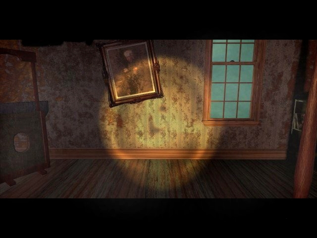
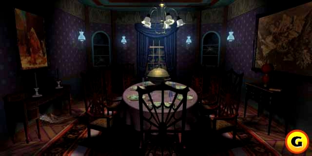
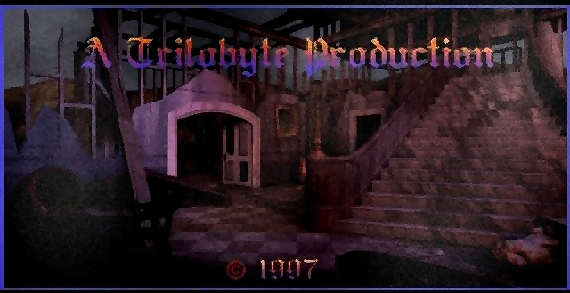

"What a player!"
Like interviews do you? Well, read on! These are the interviews from top to bottom.Graeme Devine (main programmer and concept designer),
Rob Landeros (concept and game designer),
Robert Stein III (lead artist)
Suzy Joachim (Robin Moralis).
If you want to read my interview with George Sanger, aka the Fat man (music) or with Robert Hirschboeck (Stauf), then go to
my seventh guest page.
The Graeme Devine interview
1. Let's start from the beginning. How did you feel when Virgin 'fired' you to complete the 'Guest' project?
I suppose nervous. Here I was putting myself on the line for some revolution that I said was going to happen. In some ways it's good to be validated and have someone say "go do it", in other ways it's exactly what you don't want since you're leaving the safe bubble you've come to know and love. In the end, it was one of those days that changed my life forever.2. How was it like working with enormous amounts of megabytes for the game while everybody else was still using hd's?
It was very scary. No one had done anything like this before, and going from 7th Guest to 11th Hour was a nightmare because T7G was 8bpp on 1.5 cds, 11H was 32bpp on 4 cds. Back then we couldn't even afford a 5 gigabyte hard drive, so it was tough to invent all of these methods to archive and make the project.3. How did you work with Matthew Costello? Rob Landeros told me that you gave him a short storyline with a madman and a mansion, how detailed was that story?
That story was about 3 pages long. It detailed Stauf, the seven guests, and their roles in the story. Matt took it from there.4. Do you like that when you're mentioned in articles that it says: Graeme Devine, creator of the popular game 'The seventh guest'. Since it has been years since the game.
It doesn't bother me at all. I've made plenty of other games, but I'm very proud of T7G.5. Are you willing to tell some eastereggs in the games or will that remain a secret forever?
Ha, like we had time to program them in! I suppose if you look at the TV in Dutton's room in 11H and type Kellyn Beeck, something strange might happen!6. What was the hardest thing to program in the games? Stauf's intelligence, the full motion video?
When we went from T7G to 11H the one rule for the T7G technology was not to move the camera. We moved it in every scene of 11H, so the technology had to be remade from the ground up, and that was daunting since basically it had to beat every other FMV codec out there to compress and fit with the quality wanted. Things like Quicktime have 120 people working on them. I was one person.7. Rob Landeros says that one day he would like to complete the Stauf trilogy. Do you see that happening?
Never say never.8. What can you tell me about the project 'The seventh guest III'?
There have been several T7G3 projects. One from old Trilobyte by Rob, one from Virgin, and one from the new Trilobyte once Rob left. None of them made it.9. What would be different from the seventh guest if it was released in 2000?
Real Time puzzles/movement with the same quality as the original T7G is now possible.10. What is you favorite scene in the seventh guest/11th hour?
I always liked the actors first coming into the house in T7G.11. How do look back at Trilobyte?
With fond and bitter memories. It is still there, and will always be there, but I stayed too long.12. Do you have anything to add yourself about the games?
We struck something that very few games do, a happy medium between the computer, the artist, and the mass audience. That was something else to be a part of.The Rob Landeros interview
1.How do you start designing a mansion?
In this case it was a matter of just thinking up types of rooms that you'd expect or want to see in a mansion. In addition to the standard types of mansion rooms, library, music room, etc., I decided early on to create some spectacular rooms not usually seen in residential mansions, such as the Crypt, the Chapel, the Basement Maze and the Grand Picture Gallery. The scale of these rooms far exceeds the scale of the house. You probably noticed that because of this that the layout of rooms is geographically impossible. The house map is an abstract depiction of the house's floorplan.
2. I saw a picture of a real house that looked like the stauf mansion on the outside.
What can you tell me about that?
This is a local mansion in Jacksonville called the Nunan House. It was actually a pre-fabricated house available via mail order. The parts were shipped to Oregon and put together by local workers. Nevertheless, it is well-crafted, spectacular, elegant and representative of the Victorian style. We used the image of the house as a model for the exterior of Stauf's mansion. Our original intent was to use some of the interior as models for the game also, but once we got inside we found that the rooms were actually no larger than your ordinary house. It was about at that point that I decided if we were going to construct the mansion's interior from scratch, we would take great artistic license and exaggerate the scale to extremes.
3. How much did the eleventh hour change from the first drafts to the final product?
Comparative to other game development experiences, this one stuck pretty close to the original plan. There was little in the way of large changes in the general direction we laid out at the beginning. I'd estimate we retained about 80% of Matt's original story elements.
4. How was the story created? Did you go to Matthew Costello and say "We got a house and a madman, could you make a story around that?"
Graeme came up with a one and a half page treatment which presented the idea of a toymaker who strikes a deal with the devil, preys off the souls of innocents and builds an evil mansion. We talked things over with Matthew, developed a few more ideas, such as the house guests, and he basically ran with those story elements and delivered a script which included the cast of characters, the story segments and a scheme for the triggering of events and unlocking of rooms.
5. What is your favorite room in t7g and why?
If I had to choose one, I'd have to say the Attic. Of course, this is one of the rooms I personally developed. The first version was modeled by Gene Bodio. I then added many other elements, adjusted lighting, etc. That was the modus operandi with 3D modeling that we subcontracted out. I like that room for several reasons. First, as with attics everywhere, it had a sense of mustiness, disarray, neglect and disuse. In mood, it pointed toward where we eventually went with the 11th Hour version of the mansion, which was embued with a sense of decrepitness and decay. I also like the stuff that happens within that room, particularly the animation of the skeleton rising from the cedar chest, pointing auspiciously toward the door leading to the little Room at the Top, and then literally falling apart, his jaw agape before his skull finally drops. (editor- good ol' Bones :-)) The puzzle to be found there is also one of my favorites. The object is to work your way from the bottom floor of the toy house, indicated by the lighting of the rooms' windows, to the very top room. It is the last puzzle in the last room before the end of the game and is in itself a metaphor in miniature of the 7th Guest's overall goal. From that standpoint, it is an artistically satisfying very fitting puzzle for that space, in that situation, at that time.
It is also a good example of how I developed puzzles for this environment. The puzzle is based on a classic "rule maze". This type of maze is usually seen laid out on a 2 dimensional grid. In each square of the grid would be found one of four symbols. These symbols do not have any meaning until a person leaves the square, at which point the symbol is now defined as the direction from which you can move from any future square containing that symbol. So if you moved left from a square with a triangular symbol, all triangles on the grid could effectively be replaced with right arrows, indicating the one direction you can move from those squares. Applying this concept to the 3 dimensionality of the 7th Guest environment, I wrapped the maze grid around the sides of three stacked cubes representing the three stories of the house. The differently shaped windows of the toy house functioned as the variable directional symbols. After the player defines each window's functional direction, the program keeps track of all that so that player doesn't have to. It then lights up the inevitable path automatically, taking it to its end, wherever that may be.
The Portrait Gallery would be my second favorite room. Coming from a background as a graphic artist, it was fun to take these real and imagined paintings and bring some of them to life in various ways. Stauf's face trying to push through the canvas for instance. I also like the fact that the only way to exit the gallery is via the painting of the Music Room, in which you actually enter the painting and it becomes a 3 dimensional reality. In Knox's bedroom, I took The Nightmare and animated the incubus stabbing the sleeping girl with his flute, the blood spreading out across her bosom. While in front of the painting, if you click on the music box on the mantelpiece, a small mechanical ballerina lightly twirls to a delicate tune. I like the juxtaposition of these elements.
6. If t7g was made in 1999 what would you have changed?
There would be plenty, mostly due to technological advances and availability of good tools. I think realtime 3D rendering could be successfully employed today for this game. I think the puzzles themselves would hold up well as they are. The biggest improvement would be in the video production budget. We would have better production values, digital video format, compositing techniques.7. The final scene in t7g shows the book and the text, 'end of part one'.But in the making of the 11'th hour you say that Trilobyte never intended to make a sequel.Why does the book say 'end of part one'.
I suppose at the very first we never intended to make a sequel. But half way through, we definitely decided to do a sequel. We began development of 11th Hour at the end of 1992, six months before 7th Guest shipped.
8. Have there been attempts to make a movie about the games? The movie-like genre suits it, in
my opinion.
We had assigned rights to a movie production company to develop a movie based on T7G. They began treatment on a script, but it never got farther than that. I do not know what economic or artistic factors were operating against it.9. How did you come up with the puzzles?
I have been collecting many puzzle books and magazines for years. I looked at simple pencil and paper puzzles for the most part. In T7G and 11H, the computer via the animated icons, or Stauf's unseen force if you will, indicates which moves are allowed or not. Therefore the rules and goals of the puzzle needed to be kept fairly simple and straightforward and not require complicated or lengthy instructions. The transformative artistry comes in how you take the problem represented by simple circles and grids drawn on paper, and then put them into a world of real 3 dimensional objects which are tied thematically into the environment. I've talked about the Attic puzzle. As another example I like to point to the Nineball puzzle of 11th Hour. The pencil and paper version is simply a 3x3 grid with directional arrows pointing from one square to another. It is another rule maze. The final version is transformed into a rhomboidal rack of billiard balls with "hidden lines of influence".10. I read in the guide to t7g that the game was a technical breaktrough, in the interview a lot of people said that what you wanted could not be done(images per second). How did you respond to that?
We said, "Wait and see."11. In the guide you say that you want cd-games to compete with television. Has that been accomplished?
Not really. CD-ROM games are still relegated to a small segment of the population playing solo in the den or office. Console games are accounting for a good deal of television entertainment time. The Internet these days is capturing a lot of interactive time and attention. My recent endeavor, Tender Loving Care, which pushes the interactive potential of DVD, is an attempt to bring interactive entertainment to the television watching experience.12. Is there anything that you would like to add about t7g and t11h?
It was a great experience creating those titles. I enjoyed working with the many talented people from divergent crafts and disciplines: actors, writers, musicians. I think we helped to open up the creative field in computer gaming and possibly indicated a direction that other game makers in the industry could follow or improve upon. I'd like to have the opportunity to complete the Stauf trilogy someday.Now there's an interesting ending. A Stauf trilogy, it does has a nice ring to it, doesn't it?Thank you very much, Rob Landeros!
And now the 3d wizard, put your hands together for mister Robert Stein III!
The Robert Stein III interview
1. How did you start with 3d designing?
I had been using freeware command line renderers such as Vivid and DKB for a year or so until 3DStudio v1 came out.
2. Were there game designers next to Graeme and Rob interested in using 3d before you started working for Trilobyte?
Even Graeme and Rob weren't planning to do so at first. When I went down to visit Trilobyte just after they opened their Jacksonville office, they where planning to do The Seventh guest in video, setting a camera in the middle of the room(s) in a local historic mansion. I showed them a short anim of a chair in front of a fireplace with flickering light that I had done with 3D-Studio, and off we went. The only folks that ended up thinking along the same lines were the Miller's at Cyan. It wasnt until The Seventh Guest and Myst where near finished, that everybody suddenly thought it was a good idea.
3. How did you start working on the Stauf mansion. Did you look for real-life examples?
There is a historic "Mail Order" home * in Jacksonville that was brought in on 14 train cars in the late 1800's. The Stauf mansion has some resemblance to that.
(* note by Bones, the Mail order house is called the 'Nunan' house)
4. What was it like working at Trilobyte in the beginning of the seventh guest?
Probably the most fun I've ever had professionally. I lived four blocks from the office in a town that was a National Historic Landmark, working in an historic brick building from the 1890's. Small population, few distractions, and a creepy, old cemetery for inspiration.
5. What was the most difficult thing to do on the seventh guest and the 11th hour?
In The seventh guest it was the cleaning up of bad video capture from S-VHS *. Endless hand retouching. Graeme wrote a program that performed 80% of the task, which helped alot.
(* note by Bones, S(uper)-VHS a non-digital videocamera system that a lot of people use who own a videocamera)
In the 11th Hour it was the coplanar rendering. The version of 3DStudio that was available at the beginning of the project did not allow for multiple maps on the same texture. So to add layers of dirt and damage to the repeating wall paper, without creating independent maps for each wall, I would place a duplicate face mapped with an opacity bitmap closely in front of the "Base" face. These duplicate face layer got seven deep in some locations, and this caused some rendering problems. We were on the beta-test team for the next version of 3DStudio, and we were able to make them aware of this issue, which they fixed. *
(* note by Bones, This is all very complicated, but what I think Robert is saying that adding all the dust and dirt on the existing walls caused a lot of trouble.)
6. What are your favorite rooms in the mansion and why?
I think I like the attic stairway the best. Because of its shape.
7. Did you render a lot of material for the seventh guest 3 before it got canceled?
Not much, just some tests of warping and swallowing hallways.
8. How do you see the future of 3d in the game industry. Real-time rendering or pre-rendered?
I see a hybrid. Pre-rendered is for the most part dead, but real-time still has along way to go before it can offer the visual quality players really want.*
(* Note by Bones, The seventh Guest is pre-rendered, Quake is real-time rendered)
9. How did you start with a room in the mansion. Did you start with sketches of furniture?
Sketches of fully furnished rooms. It was difficult to not put too many objects in a room drawing, because we would never have been able to render fully furnished rooms with 3DStudio version 1 on a 386's.
10. What would you change if you were to design the stauf-mansion again.What's possible now with modern day technology that wasn't possible then?
I think what we were doing with The Seventh guest 3 would be the answer. More detailed meshes for morphing. I'd probably even change the architectural layout to some
degree, just to make it stranger.
11.What can you say about this picture (screenshot from the seventh guest 3)?

That pic must be from the version we didn't do....for the Genesis. It does use most of the meshes I created for the Dinning room in the PC version of The Seventh Guest.
12. What can you say about this picture (ending picture of the windows version of The Seventh Guest)?

I've never seen this image, don't know where it came from. Might be from an earlier attempt at The Seventh Guest 3 in late '96.
13. What kind of game would you like to design?
Just about anything with a rich environment. I enjoy researching locations and cultures.
16. When did you leave Trilobyte?
I severed our contract in late '96, and came back as Art Director about 5 months later, after all the hopla over Graeme and Rob's split.
17. What are you doing now? I saw your www.rs3art.com page. Do you have your own 3d designing company?
Yes, I do have my own company, and I do a little of everything. Webpages, Music Cd Covers, Logo's, Game Graphics, Concept Sketches and animations.
18. What would you like to add in this interview about working on the seventh guest and the 11th hour?
Full Motion Video was fun. *
(* Note by Bones, Full Motion Video (FMV) using real video images in games)
Thanks a lot Robert Stein III for your time and for your interesting answers!
And now an interview made by a fellow fan. Amandine wanted more interviews and decided to contact Suzy Joachim who portraid
Robin Moralis. One thing led to another and the result can be read below. Three cheers for Amandine.
The Suzy Joachim interview

1. How did you end up with the 11th hour
I ended up doing 11th hour because of an episode as Frances Farmer in Hollywood Babylon {a show I'm not particularly proud of being on because of the quality} directed by David Wheeler, who called me to play the part of Danielle.
2. What was it like playing in interactive fiction?
What was it like playing in an interactive fiction, well I'm not really sure how it's different from any other production,
except the fact that I'm aware that people will be playing this story to their chosen outcome, which felt a little strange at the time cause I wanted to control how they saw my character, and it was interesting relinquishing control. That's always a challenge as an actor.
3. In what way was it different from projects such as films and series?
The only difference in shooting a interactive fiction to film and television is having to reshoot the ending in five or more
variations, which kept more fun in a way.
4. Have you played the 11th hour?
No I have never played 11th Hour, nor any other interactive game in my life.
5. How was the game explained and how did you respond?
The game was only explained when David wanted varying outcomes, which I LOVED the challenge of.
6. What was performing in front of a blue screen like?
Blue screen is used in all film mediums, so I souly rely on my imagination and immersment of the story.
7. How were the crew and fellow actors like?
The crew was very focused and motivated for they didn't do much film there so it was creatively exciting for them. The hours
were insane, it was 3.5/5 hours sleep a night for everyone. I became especially close to Pam the makeup artist, cause we would be at the make-up chair before dawn every morning dizzy with exhaustion listening to old disco [70's] cause all we had was an old cassette player, singing away.
The cast was alot of fun to work with, Doug is/was very playful and
witty. Marco Berrocelli (*), was such a pleasure to get to know, and work with, he was playing Richard III in Richard III at the Oregon Shakespeare Festival, I saw the play 4 times utterly and completely mesmerized by his work, oh my god it was equivalent to Lawrence Olivier's 'Hamlet', he is an aw-inspiring actor. I found it rather strange that since you got a hold
of me that I bumped into Doug at a movie opening celebration and Ihaven't seen him since we shot 11th 6/7 years ago, then he
also told me that David Wheeler has moved to vancouver recently. (* Marco played Chief Martin)
8.Which was your most beautiful recollection on the shooting?
Ah my most beautiful recollection was when we shot the outcome several different ways. It was in this lovely house I believe it was a well maintained heritage home 'bed&breakfast;', and everyone was there; crew & production people, gave such love , support and sincere appreciation the work I did touched me so deeply. absorbed cause that's not the case, it was the love and unity we all had together and it made everyone's dedication heartfelt.
9.Which were the conditions of shooting?
9. The filming conditions was very low budget, you know we didn't have professional make-up trailers or holding quarters, but that wasn't what this filming was about. It was about all of having the opportunity to be creative & grow though our work and we made the best of what we had. Howard (*) did all he could to make us happy. We had some good laughs. (* Howard Schreibner, the producer).
10. Did you feel that everybody was reaching new grounds in the interactive fiction?
10. New grounds in interactive fiction hmmm? In my limited knowledge of interactive fiction, it just made me realize that this is the
progressive way of the future. And honestly it made me a little sad that the tradition of a story being told to us had to
change so people could alter the outcome instead of just ingesting someone's creation, whether or not they like the ending or resent it. Believe me I've overcome that now and I enjoy the creativity of all diversities available to us now and that's it's constantly growing.
11. Can you speak to us about your current events?
11. Do you want recent works? Something just came to mind, I received my first nomination for 'Best actress in a feature film' called 'Beyond
Redemption" with Michael Ironside, who was a gift and inspiration to work with and Andrew McCarthy. I was nominated for a
Canadian Film Award called 'The Leo Award'I have a guest appearance on 'OUTER LIMITS', called " Decompressions " it's a good
episode.
Special thanks to Susan Mundy, Jea Geelen.